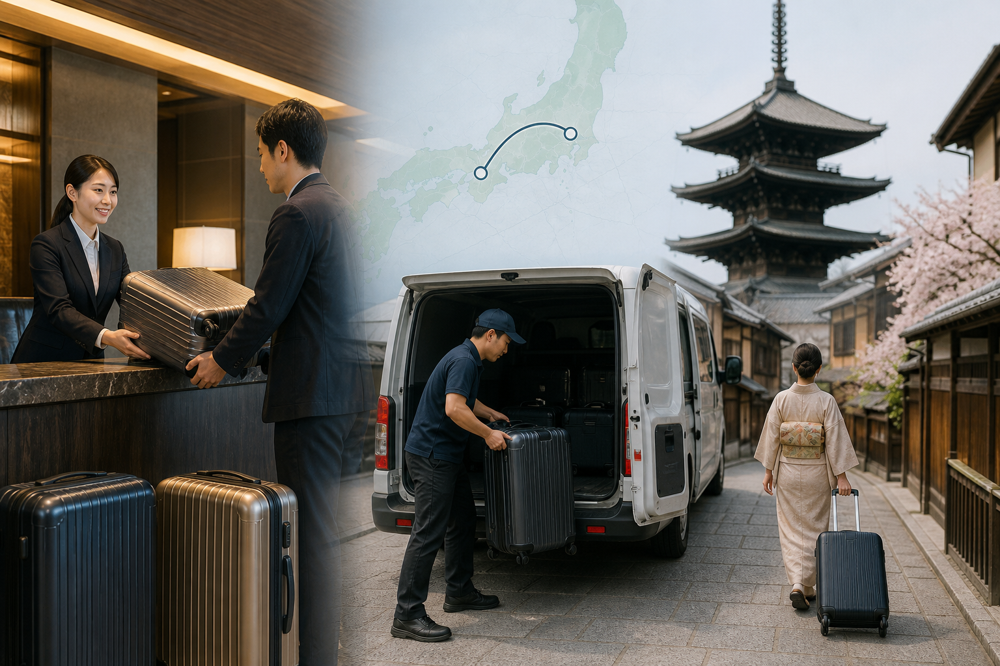
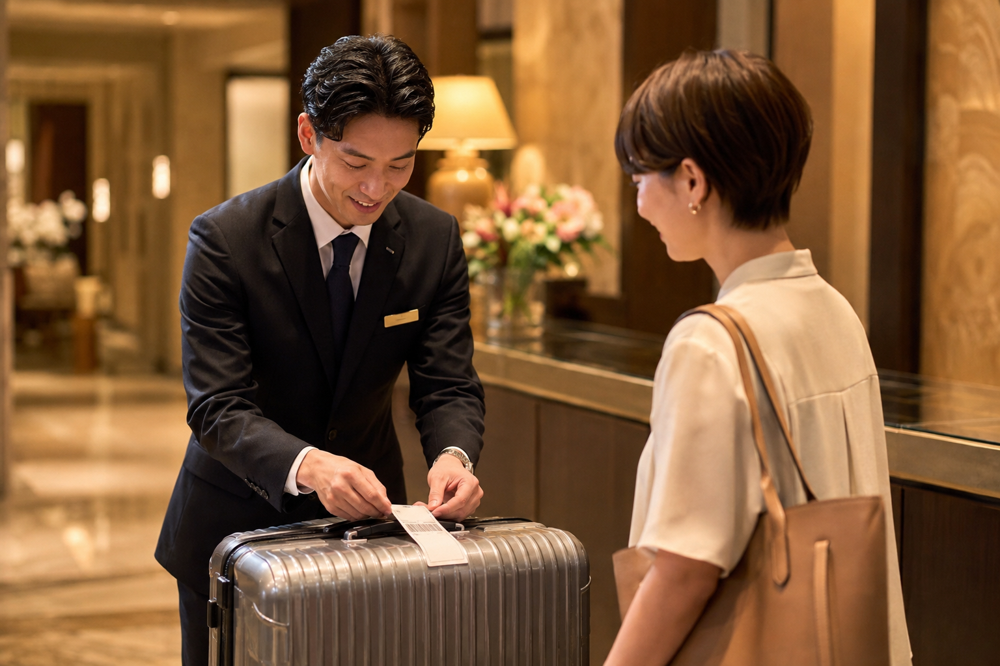
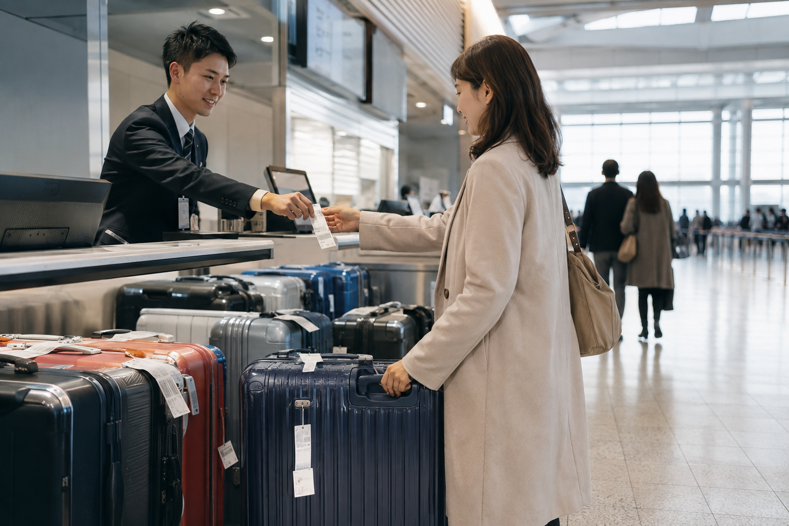

Luggage Forwarding in Japan: How Takkyubin Works
Moving a large suitcase through Japanese train stations can turn an easy travel day into a tiring one. Stairs, crowded platforms, long station corridors, train transfers, and hotel changes all become harder when you are carrying everything yourself. Japan's luggage-forwarding services give travelers another option: send the main suitcase ahead and travel with only a small bag.
The service many international visitors hear about is Takkyubin, often associated with Yamato Transport's TA-Q-BIN delivery network. You can send eligible luggage between hotels, to an airport, or to another supported collection point instead of carrying it on every train. Yamato also operates “Hands-Free Travel” services aimed at travelers moving around Japan.
For a first-time visitor, the most important thing to understand is that luggage forwarding is not instant. You need to plan where the suitcase is going, when you need it, and what you will keep with you while it is in transit. Used properly, it can make a multi-city Japan itinerary much easier.
Luggage Forwarding in Japan at a Glance

| Question | Simple Answer |
|---|---|
| What is it? | Door-to-door or counter-to-destination luggage delivery |
| Common provider | Yamato Transport / TA-Q-BIN |
| Best for | Multi-city trips and large suitcases |
| Can hotels send luggage? | Many can, but confirm with the hotel |
| Can you send hotel to hotel? | Yes, when both properties can handle delivery |
| Can you send luggage to an airport? | Yes, with advance timing |
| Is it same-day? | Sometimes on selected routes; do not assume |
| Typical standard maximum | Up to 200 cm total dimensions and 30 kg with Yamato |
| Should valuables go inside? | Keep passports, money, medicine and essentials with you |
| Do you need a day bag? | Yes |
What Is Takkyubin?
Takkyubin is the name travelers often use when talking about Japan's door-to-door luggage delivery system.
Yamato Transport operates its well-known TA-Q-BIN service across Japan.
For tourists, the basic idea is simple:
You give your suitcase to an accepted sending point → the delivery company transports it → you collect it at the next approved destination.
Instead of carrying the suitcase:
Tokyo hotel → train station → Shinkansen → Kyoto Station → Kyoto hotel
you might send it:
Tokyo hotel → Kyoto hotel
and travel between the cities with only a backpack or small overnight bag.
Why Luggage Forwarding Is So Useful in Japan
Japan has excellent public transport, but that does not mean luggage is always easy to manage.
A travel day can involve:
- ✓Walking from the hotel to the station
- ✓Entering a busy station
- ✓Finding elevators
- ✓Changing platforms
- ✓Riding the Shinkansen
- ✓Transferring to a subway
- ✓Walking to another hotel
A large suitcase affects every one of those steps.
Forwarding it removes much of that work.
Who Should Consider Using Takkyubin?
I would seriously consider luggage forwarding if you:
- ✓Have a large suitcase
- ✓Are visiting several cities
- ✓Have multiple train transfers
- ✓Are traveling with children
- ✓Have limited mobility
- ✓Want to sightsee between hotels
- ✓Are staying near busy stations
- ✓Want to avoid Shinkansen baggage planning
- ✓Are carrying more than one main bag
It can also be useful for travelers who simply want a less stressful transfer day.
When You Probably Do Not Need It
Luggage forwarding is optional.
You may not need it if:
- ✓You pack very light
- ✓You have one carry-on suitcase
- ✓Your hotels are beside major stations
- ✓You only change hotels once
- ✓Your train journey is direct
- ✓You prefer keeping everything with you
For example, a traveler with one small suitcase going:
Tokyo hotel → Tokyo Station → Kyoto Station → hotel beside Kyoto Station
may be perfectly comfortable keeping the bag.
The service is useful when it solves a real problem.
How Luggage Forwarding Works Step by Step

For a typical hotel-to-hotel transfer, the process is:
- ✓Confirm that your next hotel accepts forwarded luggage.
- ✓Ask your current hotel whether it can arrange luggage shipping.
- ✓Provide the destination hotel details.
- ✓Choose the expected delivery date where available.
- ✓Complete the shipping form.
- ✓Pay the delivery charge.
- ✓Keep your receipt or tracking information.
- ✓Travel with a small bag.
- ✓Collect the suitcase at your next hotel after delivery.
The details can vary by hotel and sending location, but this is the basic system.
Step 1: Confirm the Receiving Hotel
Do this before sending the suitcase.
Your destination details should be accurate.
Save:
- ✓Hotel name
- ✓Full address
- ✓Telephone number
- ✓Reservation name
- ✓Check-in date
- ✓Booking information if requested
If the receiving hotel cannot accept deliveries, you need another plan.
Do not assume every accommodation has a staffed reception desk.
Step 2: Ask Your Current Hotel
Many hotels in Japan can help arrange luggage forwarding.
Ask reception whether they offer:
TA-Q-BIN
or
luggage delivery
If they do, hotel staff may help with:
- ✓The shipping form
- ✓Address details
- ✓Delivery timing
- ✓Payment
- ✓Collection of the suitcase
This can be much easier for a first-time visitor than finding a delivery counter yourself.
Does Every Hotel Offer Luggage Forwarding?
No.
Many hotels can handle it, but the service should be confirmed with the individual property.
This matters especially with:
- ✓Small guesthouses
- ✓Hostels
- ✓Apartments
- ✓Vacation rentals
- ✓Unstaffed accommodation
Do not base an important luggage transfer on an assumption.
Airbnb and Private Accommodation Need More Planning
A private rental without reception staff can create problems for normal pickup and delivery.
Yamato currently states that pickup/delivery is not available to Airbnb-style accommodation when there is no reception desk staff available.
If you are staying in this type of property, you may need to use:
- ✓A Yamato sales office
- ✓An eligible convenience-store drop-off
- ✓Another approved service counter
for sending the luggage.
For collection, Yamato advises using an appropriate Yamato office rather than addressing the suitcase to a convenience store.
Can You Send Luggage From a Yamato Service Center?
Yes.
If your hotel cannot arrange the shipment, a Yamato Transport service center can be a useful alternative.
This can also give you more control if:
- ✓Your accommodation is unstaffed
- ✓You want staff assistance
- ✓Your suitcase is large
- ✓You need to confirm delivery timing
Look for Yamato's black-cat logo.
Can You Send a Suitcase From a Convenience Store?
Some convenience stores accept Yamato TA-Q-BIN shipments.
Eligible locations can include certain branches of chains such as:
- ✓7-Eleven
- ✓FamilyMart
- ✓Other participating stores
But there is an important size difference.
Yamato currently states that luggage sent from convenience stores is limited to size 160, even though standard TA-Q-BIN handled through other eligible channels can accept larger parcels up to size 200.
If your suitcase is large, a Yamato service center or hotel arrangement may be better.
How Large Can Your Suitcase Be?
Under Yamato's current standard TA-Q-BIN rules, the maximum is:
Length + width + height: 200 cm or less
and
Weight: 30 kg or less
Yamato also states that no single side should normally exceed 170 cm, with additional restrictions for items that cannot be turned upside down.
Most normal travel suitcases will fall below these limits.
Still, measure unusually large luggage before relying on the service.
How Is the Shipping Size Calculated?
Yamato uses both:
- ✓Total external dimensions
- ✓Weight
The applicable size category is based on whichever pushes the parcel into the larger category.
For example, a suitcase may have modest dimensions but be heavy enough to move into a higher price category.
That means two suitcases of similar physical size can sometimes cost differently if their weights are different.
Do You Need to Put a Suitcase in a Box?
Normally, a standard suitcase can be sent as luggage without putting the whole thing inside a cardboard box.
Make sure:
- ✓Zippers close properly
- ✓Loose straps are secured
- ✓The suitcase is suitable for transport
Yamato notes that the suitcase itself is treated as packaging, so normal scratches or marks can occur during transportation.
If that concerns you, consider using a suitable cover.
Should You Lock Your Suitcase?
If your suitcase can be locked normally, doing so is sensible.
But a lock does not make the bag suitable for valuables that should stay with you.
Your most important possessions belong in your day bag.
What Should Never Leave Your Day Bag?
When forwarding luggage, keep these with you:
- ✓Passport
- ✓Wallet
- ✓Cash
- ✓Credit cards
- ✓Phone
- ✓Chargers
- ✓Medicine
- ✓Travel documents
- ✓Hotel booking information
- ✓Important electronics
- ✓One change of clothes
- ✓Basic toiletries
I would also keep anything difficult or expensive to replace with me.
The suitcase should contain items you can live without until delivery.
Pack as if the Suitcase Could Arrive Later
Even when a delivery is expected on a certain date, transport can be affected by:
- ✓Weather
- ✓Road conditions
- ✓Remote destinations
- ✓Service disruptions
- ✓Incorrect address information
Your small bag should cover at least the period before the scheduled arrival.
For many transfers, that means packing as though you are taking a short overnight trip.
How Long Does Takkyubin Take?
Do not use one nationwide rule for every route.
Yamato's network often provides fast delivery, including next-day service on many routes, but delivery time depends on:
- ✓Origin
- ✓Destination
- ✓Drop-off time
- ✓Distance
- ✓Service counter
- ✓Weather
- ✓Remote-area conditions
Yamato describes TA-Q-BIN as providing next-day delivery across much of its network, but longer and more remote routes can require more time.
For travel planning, I would always confirm the actual expected delivery date when you send the bag.
Do Not Send Your Only Clothes Without a Backup
This is one of the most important beginner rules.
If your main suitcase is traveling separately, your day bag should contain enough for the period before delivery.
For example:
Day 1 morning: Send Tokyo suitcase
Day 1: Travel to Kyoto
Day 2: Suitcase expected in Kyoto
Carry what you need for Day 1 and the next morning rather than assuming the suitcase will be waiting the moment you check in.
Same-Day Luggage Delivery
Same-day services do exist on selected routes and through selected counters.
However, availability depends on:
- ✓Location
- ✓Drop-off cutoff
- ✓Destination
- ✓Specific service
Do not assume all Tokyo-to-hotel or hotel-to-hotel luggage can be delivered the same day.
Treat same-day delivery as a route-specific service.
For normal multi-city planning, a next-day-or-later mindset is safer.
Why I Would Not Depend on Same-Day Delivery
If your suitcase contains everything you need that evening, any delay becomes a problem.
It is much easier to plan:
Suitcase arrives tomorrow
and carry a small overnight bag.
If it arrives earlier, great.
The itinerary still works if it does not.
Hotel-to-Hotel Forwarding Is the Most Useful Setup
For most first-time visitors, the easiest use case is:
Current hotel → next hotel
You check out with a small bag.
The suitcase travels separately.
You sightsee or take the train without it.
Then you collect the suitcase after it reaches the next hotel.
This is where luggage forwarding can make the biggest difference on a multi-city trip.
How Much Does Luggage Forwarding Cost in Japan?
The cost depends on:
- ✓Suitcase size
- ✓Weight
- ✓Distance
- ✓Origin
- ✓Destination
- ✓Service type
There is no single nationwide flat fee for every suitcase.
For a normal travel suitcase, the cost is often much lower than travelers expect when compared with the convenience of avoiding a large bag during a transfer day.
I would treat luggage forwarding as a comfort and logistics expense, not simply compare it with carrying the bag for free.
What Affects the Price Most?
The two biggest factors are usually:
Bag size
and
delivery distance
A larger suitcase sent a longer distance will generally cost more than a small suitcase sent between nearby regions.
Extra services can also affect the final amount.
Should You Forward Every Suitcase?
Not necessarily.
If two people are traveling with:
- ✓One large suitcase
- ✓Two small backpacks
you may only need to forward the large suitcase.
Travel with the smaller bags.
This reduces cost while still solving the main luggage problem.
Hotel-to-Hotel Luggage Forwarding Example
Imagine your route is:
Tokyo → Kyoto
You could send your suitcase from your Tokyo hotel to your Kyoto hotel.
Your transfer day becomes:
- ✓Check out in Tokyo.
- ✓Leave the large suitcase for forwarding.
- ✓Carry a small overnight bag.
- ✓Travel to Kyoto.
- ✓Sightsee without luggage.
- ✓Check into the hotel.
- ✓Collect the suitcase when delivered.
This is one of the easiest ways to use Takkyubin.
Tokyo to Kyoto: Is Forwarding Worth It?
It depends on your suitcase.
If you have:
- ✓One small carry-on
- ✓Direct Shinkansen travel
- ✓Hotels close to stations
I would probably keep the bag with me.
If you have:
- ✓Large luggage
- ✓Children
- ✓Several transfers
- ✓A hotel far from the station
- ✓Plans to sightsee before check-in
forwarding becomes much more attractive.
Kyoto to Osaka: Do You Need Takkyubin?
Usually less often.
Kyoto and Osaka are close together, and many travelers can handle the journey with a normal suitcase.
I would consider forwarding if:
- ✓Your suitcase is large
- ✓You have a full sightseeing day between hotels
- ✓You want to visit Nara during the transfer
- ✓Your Osaka hotel is difficult to reach with luggage
Otherwise, carrying the bag can be simpler.
Kyoto → Nara → Osaka Is a Perfect Forwarding Example
This is one of the strongest use cases from our 10-day Japan itinerary.
Instead of:
Kyoto hotel → Nara with suitcase → luggage storage → Osaka
you can send:
Kyoto hotel → Osaka hotel
Then travel:
Kyoto → Nara → Osaka
with only a day bag.
That gives you several benefits:
- ✓No large suitcase in Nara
- ✓No need to search for a large locker
- ✓Easier temple and park walking
- ✓Easier train transfers
- ✓Simpler Osaka arrival
This is exactly the type of travel day where luggage forwarding earns its cost.
Kyoto to Hiroshima
Forwarding can also help on:
Kyoto → Hiroshima
especially if you plan to sightsee immediately after arrival.
You could send the suitcase to your Hiroshima hotel and travel with only essentials.
However, because the Shinkansen connection itself is straightforward, travelers with smaller bags may prefer to keep their luggage.
Hiroshima to Osaka
This is another direct rail journey where forwarding is optional.
Use it when it improves the day.
Do not turn luggage forwarding into something you must do on every transfer simply because Japan offers the service.
Kanazawa → Shirakawa-go → Takayama
This is one of the best examples in our three-week itinerary.
Shirakawa-go is a sightseeing stop between two hotel bases.
A large suitcase can make this day much harder.
Instead, consider:
Send large suitcase from Kanazawa to Takayama
then travel:
Kanazawa → Shirakawa-go → Takayama
with a smaller bag.
This removes the need to move a suitcase through the village.
Can You Skip a Hotel When Forwarding Luggage?
Yes, and this can be very useful.
Your suitcase does not always need to follow you to every overnight stop.
For example:
Tokyo → Hakone → Kyoto
You might forward the large suitcase:
Tokyo hotel → Kyoto hotel
Then stay one night in Hakone with only a small overnight bag.
This works well for:
- ✓Ryokan stays
- ✓One-night side trips
- ✓Mountain towns
- ✓Overnight temple stays
- ✓Short countryside stops
This Is Sometimes Called "Skipping a Stop"
The luggage moves directly to a later hotel while you visit somewhere else in between.
For example:
Suitcase: Tokyo → Kyoto
You: Tokyo → Hakone → Kyoto
This can make one-night stays far easier.
But you need enough clothes and essentials for the nights without the suitcase.
How Many Days Can You Send Luggage Ahead?
Delivery companies can sometimes hold luggage for a requested future delivery date within their service rules.
This can make it possible to send your suitcase ahead while you spend a night or two elsewhere.
Do not assume unlimited storage.
Ask the sending location what delivery dates are available for your route.
Sending Luggage to an Airport

Airport delivery is another useful service.
Instead of taking your large suitcase on:
Hotel → subway → airport train → terminal
you can send it ahead.
This can make departure day much easier.
It is especially useful if:
- ✓You have several suitcases
- ✓You have children
- ✓Your hotel requires several train transfers
- ✓You want to sightsee before the flight
Airport Delivery Needs More Time
Do not treat airport forwarding like a normal hotel delivery.
Yamato requires luggage to be sent several days before the flight depending on the airport and origin so that it reaches the airport service counter in time.
The exact deadline varies by route.
This is one of the situations where you must ask:
“What is the latest sending date for my flight?”
rather than assuming next-day delivery is enough.
What Information Is Needed for Airport Delivery?
Be ready to provide details such as:
- ✓Airport
- ✓Terminal
- ✓Flight date
- ✓Flight number
- ✓Passenger name
- ✓Airline
- ✓Collection location
Check the delivery slip carefully.
A wrong terminal or flight date can create unnecessary stress.
When Should You Collect Airport Luggage?
Arrive with enough time to:
- ✓Find the luggage counter.
- ✓Collect the suitcase.
- ✓Reorganize anything needed.
- ✓Check in with the airline.
- ✓Complete airport procedures.
Forwarding the bag saves transport effort, but you still need time to collect it.
Can You Send Luggage From the Airport to Your Hotel?
Yes, airport-to-hotel forwarding can also be useful after arrival.
This can help if:
- ✓Your room is not ready
- ✓You want to start sightseeing
- ✓You have several bags
- ✓You are transferring through a busy city
You can send eligible luggage toward your hotel and travel with a smaller bag.
Airport-to-Hotel Delivery May Not Be Immediate
Do not assume your suitcase will reach your hotel before you do.
Delivery time depends on:
- ✓Airport
- ✓Hotel location
- ✓Drop-off time
- ✓Service availability
Keep anything needed for your first night with you.
Can You Forward Luggage From Narita Airport?
Yes, luggage delivery services are available at Narita through participating counters.
This can be useful if your Tokyo hotel involves several train transfers or if you want to travel light after landing.
Can You Forward Luggage From Haneda Airport?
Yes, participating luggage-delivery counters also operate at Haneda.
Because Haneda is closer to central Tokyo than Narita, some travelers may prefer simply taking their suitcase.
The better choice depends on:
- ✓Hotel location
- ✓Bag size
- ✓Number of travelers
- ✓Arrival time
Can You Forward Luggage From Kansai Airport?
Yes, luggage delivery services can be useful when arriving at or departing from Kansai International Airport.
For example, you may send luggage toward:
- ✓Osaka
- ✓Kyoto
- ✓Another supported destination
while traveling more lightly.
Hotel Luggage Storage vs Luggage Forwarding
These solve different problems.
Hotel Storage
Best when you:
- ✓Arrive before check-in
- ✓Have checked out but stay in the same city
- ✓Return to the same hotel
Luggage Forwarding
Best when you:
- ✓Change cities
- ✓Move to another hotel
- ✓Sightsee during a transfer
- ✓Skip an overnight stop with the main suitcase
Do not pay to forward a bag if simple hotel storage already solves the problem.
Station Lockers vs Takkyubin
Coin lockers can also help.
Station Lockers Are Better When:
- ✓You only need storage for a few hours
- ✓You will return to the same station
- ✓Your suitcase fits
- ✓You need the bag again that day
Luggage Forwarding Is Better When:
- ✓You are changing hotels
- ✓You do not want to return
- ✓The bag is large
- ✓You want to travel hands-free for a full day or longer
The Problem With Relying on Large Station Lockers
Large lockers can fill up, especially at busy stations.
This creates a risk if your entire transfer plan depends on finding one.
Luggage forwarding removes that uncertainty when arranged in advance.
I would prefer forwarding for an important multi-stop transfer rather than hoping a suitable locker is available.
Can You Track Your Luggage?
Yes, Yamato shipments can be tracked using the tracking number provided with the shipment.
Keep:
- ✓Receipt
- ✓Waybill copy
- ✓Tracking number
until the suitcase arrives.
Save a photo of the information on your phone as a backup.
What If the Luggage Is Late?
First, check the tracking information.
Then contact:
- ✓Yamato
- ✓Sending hotel
- ✓Receiving hotel
depending on where the shipment appears to be.
This is another reason you should keep essential items with you.
A delay becomes inconvenient rather than disastrous if you still have:
- ✓Medicine
- ✓Clothes
- ✓Toiletries
- ✓Passport
- ✓Electronics
Weather Can Affect Delivery
Japan can experience:
- ✓Heavy rain
- ✓Typhoons
- ✓Snow
- ✓Road closures
- ✓Other transport disruptions
These can delay luggage delivery.
If severe weather is expected, add more buffer rather than sending a suitcase that you absolutely need the same evening.
Winter Routes May Need More Buffer
Mountain regions and areas with heavy snow can have slower transport conditions.
If your itinerary includes places such as:
- ✓Takayama
- ✓Shirakawa-go
- ✓Hokkaido
- ✓Mountain resorts
confirm the expected delivery time carefully.
What Can You Put Inside Forwarded Luggage?
Normal travel items such as:
- ✓Clothes
- ✓Shoes
- ✓Toiletries
- ✓Souvenirs
- ✓Other ordinary belongings
are generally suitable, subject to carrier rules.
However, some items are restricted or prohibited.
Items I Would Keep Out of Forwarded Luggage
Keep these with you:
- ✓Passport
- ✓Cash
- ✓Bank cards
- ✓Expensive jewelry
- ✓Important documents
- ✓Medication
- ✓Fragile valuables
- ✓Essential electronics
- ✓Anything you need immediately
Also check Yamato's current prohibited-item rules before packing anything unusual.
Can You Send a Laptop?
Even if a delivery service may accept certain electronic items under specific conditions, I would normally keep expensive and important electronics with me.
Your laptop, camera, and other valuable devices are safer in your personal bag.
The goal of forwarding is to remove bulky clothing luggage, not send every valuable item you own.
Can You Send Medicine?
I would keep necessary medicine with you.
Never place medication you cannot easily replace inside luggage that will be separated from you for a day or more.
Can You Send Food?
Food rules depend on the item and service.
Yamato has separate temperature-controlled delivery services for some shipments, but that is not the same as normal tourist suitcase forwarding.
For normal luggage forwarding, avoid placing:
- ✓Perishable food
- ✓Leaking liquids
- ✓Items that need refrigeration
inside your suitcase.
Pack Liquids Carefully
Even ordinary toiletries can leak.
Before forwarding:
- ✓Tighten caps
- ✓Use sealed bags
- ✓Separate liquids from electronics and clothing
- ✓Avoid overfilling containers
Your suitcase may move through several transport stages before reaching the hotel.
Should You Use a Luggage Cover?
It is optional.
A luggage cover can help reduce:
- ✓Scratches
- ✓Dirt
- ✓Loose straps
But it is not required for a normal suitcase.
If you use one, make sure shipping labels remain visible and secure.
Keep the Waybill Information Accurate
Luggage delivery depends on the address you provide.
Double-check:
- ✓Hotel name
- ✓Postal code
- ✓Full address
- ✓Telephone number
- ✓Guest name
- ✓Arrival date
If the reservation is under someone else's name, use the correct booking name.
Tell the Hotel You Are Sending Luggage
Even if the hotel normally accepts deliveries, I would let them know when practical.
This is especially useful if:
- ✓The suitcase arrives before you
- ✓Your reservation name differs from the shipping name
- ✓You are sending several bags
- ✓You arrive several days later
Good communication reduces confusion.
Luggage Forwarding Works Best When Planned With Your Itinerary
Do not decide transfer by transfer at the last minute.
Look at your full route.
Mark the days where luggage creates a problem.
For example:
Tokyo → Kyoto: maybe carry
Kyoto → Nara → Osaka: forward
Osaka → Hiroshima: maybe carry
Hiroshima → airport: consider forwarding
Use the service selectively.
That gives you most of the convenience without paying for unnecessary deliveries.
How to Decide When Luggage Forwarding Is Worth It
Takkyubin is most useful when it removes a real problem from your itinerary.
Before paying to forward a suitcase, ask:
- ✓Am I changing hotels?
- ✓Will I sightsee before reaching the next hotel?
- ✓Do I have several train transfers?
- ✓Is my suitcase difficult to carry?
- ✓Am I traveling with children?
- ✓Will I use a bus or smaller station?
- ✓Do I have an overnight stop between major hotels?
If several answers are yes, forwarding can make the day much easier.
When I Would Definitely Consider It
I would strongly consider forwarding luggage for routes such as:
Kyoto → Nara → Osaka
Kanazawa → Shirakawa-go → Takayama
Tokyo → one-night Hakone stay → Kyoto
Hotel → airport before departure
These routes involve either sightseeing between hotels or another reason not to carry everything.
When I Would Probably Carry My Own Bag
I would probably keep the suitcase for a simple journey such as:
Tokyo hotel near station → Kyoto hotel near station
if:
- ✓The suitcase is small
- ✓The train is direct
- ✓I do not have sightseeing planned during the transfer
- ✓The hotel is easy to reach
Luggage forwarding should simplify the trip, not become another task to arrange every two days.
A Good Strategy for a 7-Day Japan Trip
For a short Japan trip, you may only change your main hotel once.
For example:
Tokyo → Kyoto
If you pack light, you probably do not need forwarding.
If your suitcase is large or your Kyoto hotel is difficult to reach, sending it ahead can still help.
I would use the service only if it noticeably improves the transfer.
A Good Strategy for a 10-Day Japan Trip
Our 10-day route uses:
Tokyo → Kyoto → Nara → Osaka
The strongest forwarding opportunity is:
Kyoto hotel → Osaka hotel
while you travel through Nara.
This lets you spend Day 8 in Nara with only a small bag.
That is more useful than forwarding every suitcase between every hotel.
A Good Strategy for a 14-Day Japan Trip
Our two-week route includes:
Tokyo → Kyoto → Hiroshima → Osaka
with Nara and Miyajima as day trips.
A simple luggage strategy could be:
Tokyo → Kyoto: carry or forward
Nara: leave main luggage at Kyoto hotel
Kyoto → Hiroshima: carry or forward
Miyajima: leave main luggage at Hiroshima hotel
Hiroshima → Osaka: carry or forward
The best solution depends on suitcase size and hotel locations.
A Good Strategy for a 21-Day Japan Trip
Longer routes benefit more from planning luggage separately from your body.
For our three-week trip, the key section is:
Kanazawa → Shirakawa-go → Takayama
I would seriously consider forwarding the main suitcase to Takayama before visiting Shirakawa-go.
For the rest of the route, use forwarding only where it reduces difficult transfers.
Luggage Forwarding vs Shinkansen Oversized-Baggage Reservation
These are two different solutions.
Take the Suitcase on the Shinkansen
Best if:
- ✓You want the luggage immediately
- ✓You have only one train transfer
- ✓Your bag is manageable
- ✓You can follow the applicable baggage rules
Forward the Suitcase
Best if:
- ✓You want to sightsee between hotels
- ✓Your bag is large
- ✓Station transfers are difficult
- ✓You do not need the suitcase immediately
Our Shinkansen Guide: How to Use Japan's Bullet Trains explains the separate oversized-baggage rules.
Do Not Forward Your Passport or Bank Cards
Yamato's current prohibited-item rules specifically include items such as:
- ✓Cash
- ✓Credit cards
- ✓Bank cards
- ✓Passports
- ✓Certain securities
- ✓Dangerous goods
Your passport should always stay with you anyway.
Keep your money, cards, identification, and essential documents in your personal bag.
Keep Expensive Valuables With You
Yamato also restricts parcels containing items above its stated value limit.
Even apart from formal restrictions, I would keep important valuables with me.
This includes:
- ✓Camera
- ✓Laptop
- ✓Expensive jewelry
- ✓Hard-to-replace electronics
- ✓Important work devices
Use luggage forwarding mainly for ordinary travel belongings.
What Should Go in Your Overnight Bag?
If your main suitcase will be away for a night, pack:
- ✓Passport
- ✓Wallet
- ✓Phone
- ✓Charger
- ✓Medicine
- ✓Underwear
- ✓Socks
- ✓One change of clothes
- ✓Basic toiletries
- ✓Weather layer
- ✓Hotel information
If delivery could take longer, pack accordingly.
Think of the small bag as a miniature version of your main luggage.
Do Not Send Your Only Warm Jacket Ahead
This matters in colder seasons.
If you are traveling through a mountain area or Japan in winter, keep weather-essential clothing with you.
The same applies to:
- ✓Rain jacket
- ✓Prescription glasses
- ✓Medicine
- ✓Essential footwear
Anything you may urgently need should not be traveling separately.
Airport Forwarding Needs Extra Buffer
Airport delivery should be planned earlier than a normal hotel-to-hotel shipment.
For Narita and Haneda, Yamato currently advises sending luggage early enough that it arrives at the airport one day before your flight departure.
That means your hotel may need to accept the suitcase from you several days before the flight depending on where you are sending it from.
Do not ask:
“Can I send this tomorrow?”
Ask:
“When must I hand this suitcase over for my flight on this date?”
The sending counter or hotel can confirm the route-specific deadline.
Do Not Put Your Flight-Day Clothes in the Airport Bag
If you send your suitcase to the airport ahead of time, keep enough belongings for the remaining hotel nights.
For example:
Day 12: Send suitcase to airport
Day 14: Fly home
You still need clothes and toiletries for Days 12–14.
Pack the small bag before handing over the suitcase.
Check the Airport Terminal Carefully
Airports can have multiple terminals.
Before shipping luggage to an airport, confirm:
- ✓Airport name
- ✓Terminal
- ✓Airline
- ✓Flight number
- ✓Departure date
Do not guess the terminal based on an old booking screenshot.
Check your current flight reservation.
Leave Time to Collect the Bag
Airport luggage forwarding does not mean you can arrive just before check-in closes.
You still need to:
- ✓Find the collection counter.
- ✓Show the required information.
- ✓Collect the suitcase.
- ✓Reach airline check-in.
- ✓Complete security and other departure procedures.
Build that into your airport timing.
Track Important Shipments
Keep the tracking number until the suitcase is in your hands.
I would:
- ✓Keep the paper receipt
- ✓Take a photo of it
- ✓Save the tracking number in my phone
This gives you something concrete to use if there is a delay or hotel staff cannot immediately find the bag.
Common Luggage Forwarding Mistakes
Assuming Delivery Is Instant
Hotel-to-hotel forwarding often needs time.
Sending Everything You Own
Keep essentials with you.
Forgetting to Confirm the Next Hotel Accepts Bags
Not every property has staffed reception.
Sending to an Unstaffed Rental
Private accommodation can require a different collection plan.
Using a Convenience Store With an Oversized Bag
Convenience-store acceptance has stricter size limits than standard TA-Q-BIN.
Giving the Wrong Hotel Name
Use the exact booking information.
Forgetting Your Reservation Name
The receiving hotel needs to match the suitcase with a guest.
Sending Airport Luggage Too Late
Airport forwarding needs more buffer.
Putting a Passport or Credit Card Inside
Keep these with you.
Assuming Every Route Is Next Day
Distance, weather, and destination matter.
Forwarding Luggage on Every Transfer
Use the service where it actually improves the itinerary.
Luggage Forwarding Checklist
Before sending a suitcase, confirm:
- ✓Receiving property accepts luggage
- ✓Correct hotel name
- ✓Correct address
- ✓Telephone number
- ✓Booking name
- ✓Check-in date
- ✓Expected delivery date
- ✓Bag size and weight
- ✓Delivery cost
- ✓Tracking number
- ✓Essential items removed
- ✓Enough clothes in your day bag
For airport delivery, also confirm:
- ✓Airport
- ✓Terminal
- ✓Airline
- ✓Flight number
- ✓Flight date
- ✓Collection deadline
Frequently Asked Questions
What is Takkyubin in Japan?
Takkyubin commonly refers to Japan's door-to-door parcel and luggage delivery services. Yamato Transport's TA-Q-BIN is one of the best-known options.
Can I send luggage from one hotel to another in Japan?
Yes, when the sending and receiving properties can handle luggage delivery. Confirm with both hotels before relying on it.
How long does luggage forwarding take?
It depends on the route, sending time, destination, and conditions. Next-day delivery is common across much of Yamato's network, but some routes need longer.
Is luggage forwarding same day?
Selected same-day services exist, but do not assume your route qualifies.
How much does Takkyubin cost?
The price depends mainly on luggage size, weight, route, and service. Ask for the current rate when sending the suitcase.
How big can my suitcase be?
Yamato's standard TA-Q-BIN currently accepts eligible luggage up to 200 cm in total dimensions and 30 kg, subject to its rules.
Can I send luggage from a convenience store?
Some participating convenience stores accept TA-Q-BIN, but suitcase size limits can be lower than at other Yamato sending points.
Can I send luggage to an Airbnb?
An unstaffed private rental can be difficult because no reception may be available to receive the bag. Check the property and Yamato options first.
Can I send my suitcase to Narita or Haneda Airport?
Yes, through eligible Airport TA-Q-BIN arrangements. Send it early enough to meet the airport delivery deadline.
Can I send luggage from the airport to my hotel?
Yes, participating airport counters can arrange luggage delivery to supported destinations.
Should I forward luggage between Tokyo and Kyoto?
It can help with large bags, children, difficult hotel locations, or sightseeing during the transfer. Travelers with small luggage may not need it.
Is luggage forwarding useful for Kyoto, Nara and Osaka?
Yes. Sending luggage from Kyoto directly to Osaka can make a Nara sightseeing stop much easier.
Is luggage forwarding useful for Shirakawa-go?
Very. Forwarding a large suitcase between your main hotel bases can let you visit Shirakawa-go with only a small bag.
Can I track my suitcase?
Yes. Keep the shipment tracking information until delivery is complete.
Should I put valuables in forwarded luggage?
No. Keep passports, money, bank cards, medicine, important electronics, and other essential valuables with you.
Is Takkyubin worth it?
It can be worth the extra cost when it removes large luggage from a difficult transfer or lets you sightsee comfortably between hotels. You do not need to use it for every hotel change.
Final Thoughts
Luggage forwarding in Japan is most useful when it solves a specific travel problem. Send large suitcases ahead when you have difficult train transfers, sightseeing between hotels, a one-night side trip, or an airport departure that would be easier without heavy bags. Keep essentials with you, confirm delivery timing before handing over the suitcase, and use Takkyubin selectively rather than automatically. A well-planned luggage transfer can turn one of the hardest parts of a multi-city Japan trip into one of the easiest.